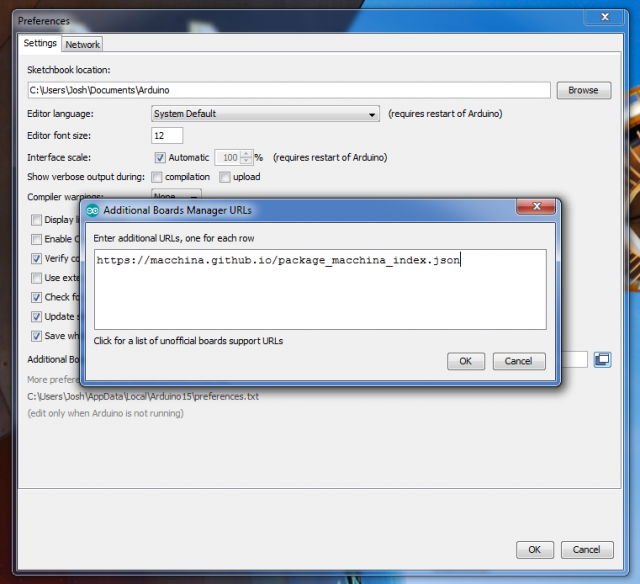
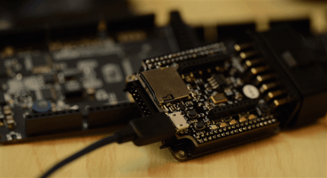
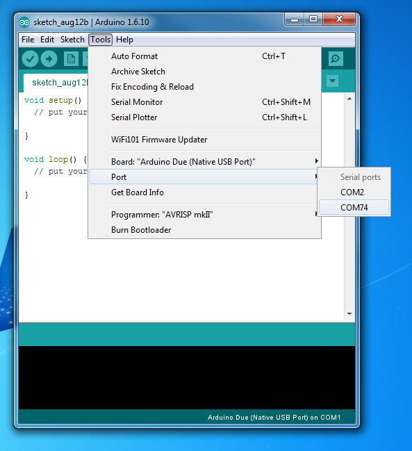
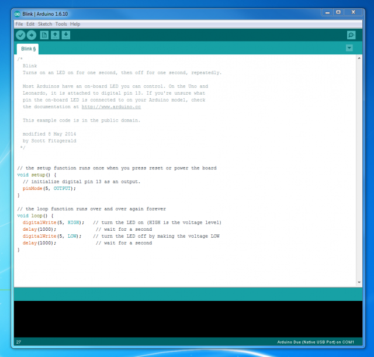
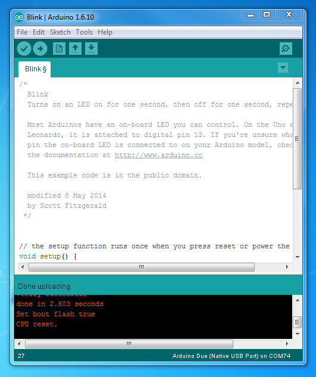

Getting Started
There are many ways you can write code and work with M2. One of the quickest and easiest ways is to use the Arduino IDE. (Integrated Development Environment). Many other development environments work well including Atmel Studio and Simulink®. In the following section, we'll describe how to set things up in each environment, starting with the Arduino IDE.
Arduino IDE
We made it super easy to get the Arduino IDE set up for use with M2. Watch this video to see how it is done.
You'll start by downloading and installing the latest Arduino IDE here:
https://www.arduino.cc/en/Main/Software
If you'd rather read something instead of watching a video, here is a great tutorial:
https://learn.adafruit.com/add-boards-arduino-v164/
Setup
After installing the Arduino IDE, paste this URL:
https://macchina.github.io/package_macchina_index.json
Into the preferences window like this:

Select the M2 board and install like this:

Blink an LED

Blinking an LED may sound lame, BUT is does mean that everything is working and set up correctly between your computer and M2.
Step 1. Plug in your M2 via USB to your computer. You may see some drivers being installed if this is the first time.
Step 2. Change the port to the correct serial port for M2.

Step 3. Open "Blink" example found at File -> Examples -> 01. Basics -> Blink.
Step 4. Change 13 to 5 (in 3 places)

Step 5. Press the "Upload" button and you should see the Blue LED blinking after a few seconds

Extra credit: Go to this page to learn what the pin number of the other LEDs are:
Try making a different LED blink by changing to a pin number in the sketch.